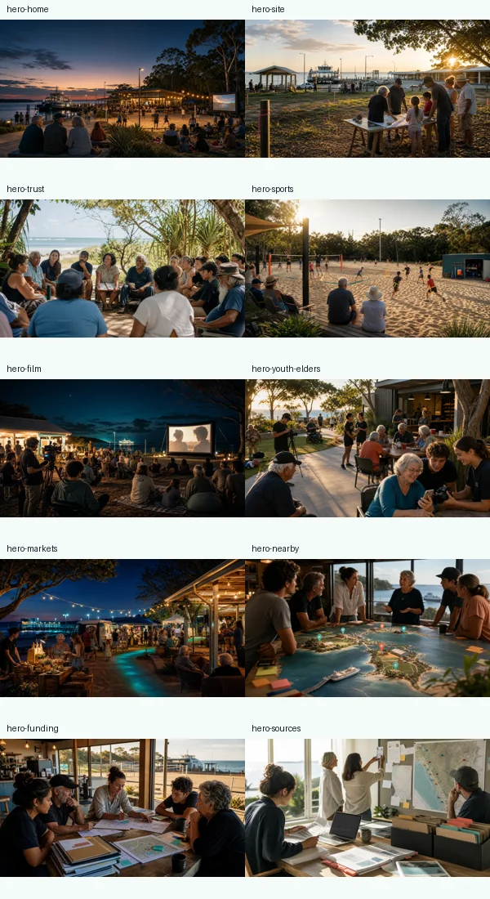

10-12 Ballow Road public listing
Property listing evidence for address, development/tourism framing, sale/tender context and the real photo set used on the site page. Check current status manually before quoting.
Commercial Real Estate listingSources
Public links, local source documents, real site photos, generated page images and live checks sit here so the rest of the site can stay energetic and readable.
Public links
Some real-estate and government pages block automated fetches. Keeping the links visible lets people check the current public record directly.
Property listing evidence for address, development/tourism framing, sale/tender context and the real photo set used on the site page. Check current status manually before quoting.
Commercial Real Estate listingSecondary public property listing for the same site.
DevelopmentReady: 10-12 Ballow RoadThe Department of Transport and Main Roads project page and Redlands Coast Today article are the source trail for the $41 million terminal-upgrade context.
TMR project page | Redlands Coast TodayCommunity 360-photo evidence map, official project source trail, simulation workflow and drone/LiDAR data ladder for the ferry gateway upgrade beside the Ballow Road ideas.
Open ferry lab | Source repoPublic planning reference for the wider Dunwich / Gumpi township, including long-term movement, economy, eco-tourism, community, culture and future-project framing.
Gumpi Master Plan 2023 PDFPublic orientation source for the immediate cultural neighbour to 10-12 Ballow Road, with venue listings showing 14-16 Ballow Road, Dunwich.
iam Straddie venue listingPublic orientation source for the nearby Sharks/Allsports sports anchor at Ron Stark Oval, 2 Ballow Road, Dunwich.
Straddie Sharks website | Stradbroke Island listingPublic starting points. Real cultural work happens through direct relationships and the right local pathways.
QYAC | MMEIC: what we doLocal source documents
These documents supplied planning fuel, site logic, grant context and program ideas.
Strategic framework for sand sport, screen culture, partnership and phased implementation.
Earlier distributed hub model across Dunwich, Amity and Point Lookout, now treated as Dunwich-first and site-vetted.
10-12 Ballow Road, 9 Ballow Road, Point Lookout and possible Amity facility logic to check before any formal pitch.
Physical hub, multicultural community infrastructure and grant pathway framing.
Ready S.E.T. co-op, local jobs and older-local/youth support context.
Market onboarding, transport, public notices and future-network integration.
Live checks
This is the short list to check before the concept turns into a formal proposal, grant pack or partner conversation.
Sale outcome, ownership and any active EOI/tender status.
Zoning, development approval, traffic, flood, services and access.
QYAC, MMEIC and local family guidance for cultural programming.
Land, build, insurance, maintenance, staffing and operational reserves.
Image note
Most page hero images communicate mood and page purpose. The 10-12 Ballow Road page now also uses real site photos from the public listing so the slope, bay outlook, road edge and neighbouring context are harder to misread. None of the images are architectural renders, approved designs or partner commitments.
